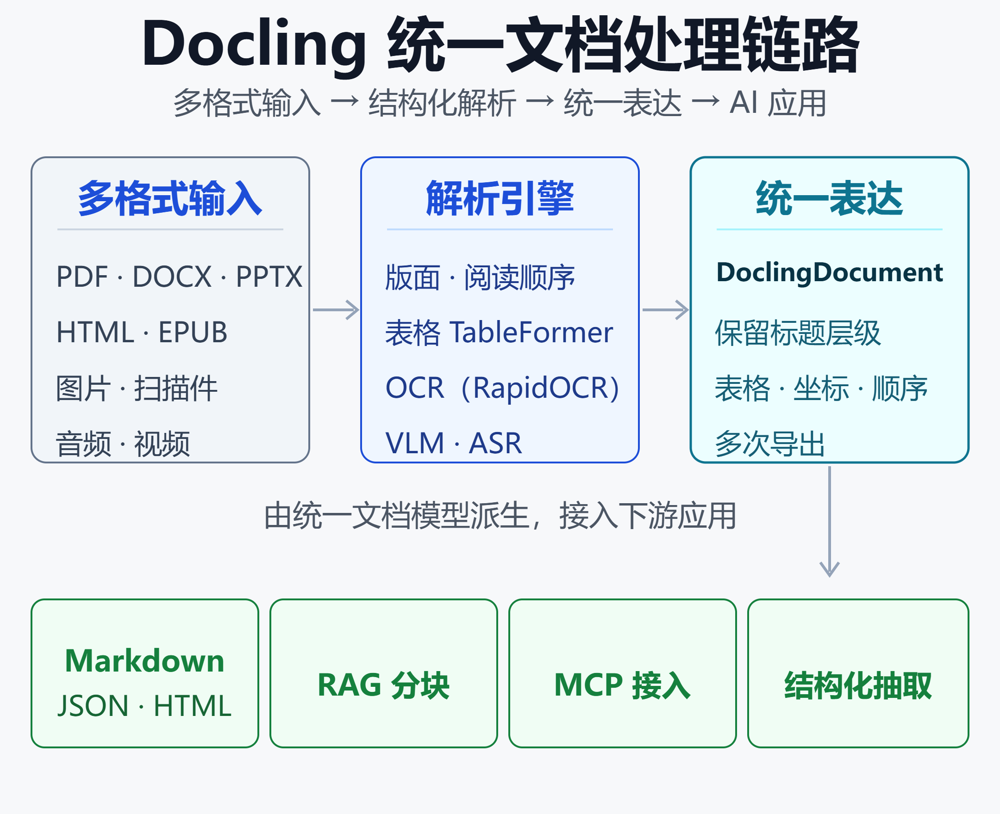
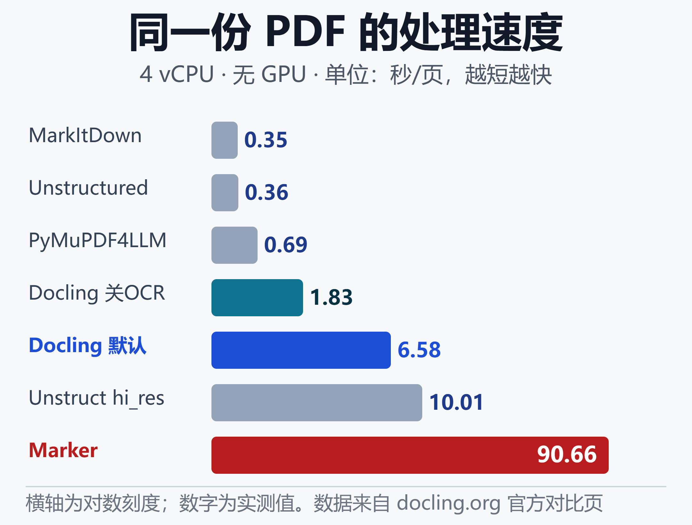

Docling 深度调研：70K Star 文档解析标准，强在哪慢在哪
一份 100 页的 PDF 财报丢进知识库，最常见的结局不是答不出来，而是答得一本正经却引错了地方。表格被拦腰截断，双栏正文拼成奇怪的句子，扫描页干脆变成一片空白。问题往往不出在大模型，而出在它被喂到嘴里的那一步。
2024 年 7 月，IBM Research Zurich 把一个专门解决这一步的开源项目放上 GitHub。到 2026 年 11 月，它拿到 70,637 颗星、5,362 个 fork、1,926 次提交，最近一次提交发生在 11 月 18 日，版本号停在 2.150.1。它叫 Docling。
星数说明关注度，不说明它是否适合某条流水线。官方对比页在 4 核 CPU、无 GPU 的同一台机器上给出了一组不太讨喜的数字：处理同一份 9 页论文，MarkItDown 每页 0.35 秒，Docling 默认模式每页 6.58 秒；扫描件文字召回率，Docling 是 94.2%，落后于 Unstructured 的 99.7% 和 Marker 的 97.2%；复杂表格重建，官方页面也承认 Marker 做得更好。
既然如此，为什么它仍高频出现在企业 RAG 的技术栈里？答案藏在「结构」两个字里。
一、出身不寻常：从实验室项目到基金会托管
Docling 由 IBM Research Zurich 的 AI for knowledge 团队发起，技术报告署名是 Deep Search Team。报告于 2024 年 8 月 19 日公开，最新修订在同年 12 月 9 日，论文编号 arXiv:2408.09869。
项目目前托管在 LF AI & Data Foundation，代码采用 MIT 许可证，模型权重则遵循各自的原始许可。这个治理结构决定了两件事：一是项目不会因单一厂商的战略调整而停摆，二是商用时需要把代码和模型两份许可分开看。
| 项目 | 数据 |
|---|---|
| 首次提交 | 2024-07-09 |
| Star | 70,637 |
| Fork | 5,362 |
从提交记录看，活跃贡献者中既有 IBM 苏黎世研究院的成员，也有来自社区的独立开发者。最近一次提交是给 PPTX 后端补上瀑布图、树状图、旭日图等 Office 2016 图表类型——这类细节恰好说明项目现在的状态：不再是铺摊子，而是在补长尾。
同期还有一个值得注意的信号：官网已经出现商业版本的入口。IBM 提供托管 SaaS 与私有化部署，前端仍是同一套 DoclingServiceClient 接口。开源项目跑通商业模式，通常意味着它已经越过「能不能活」的阶段。
二、统一的窄腰：为什么是 DoclingDocument
文档解析领域长期缺一个稳定的中间层。每个 RAG 框架都要自己处理 PDF、Word、网页和图片，各写一套 ETL，结果就是重复造轮子，且每家的输出都对不上。
Docling 的选择是先把所有输入收敛到一个统一表达：DoclingDocument。它是一个基于 Pydantic v2 的文档对象，保留了标题层级、段落、表格、图片、公式、代码块、阅读顺序，以及每个元素所在的页码和边界框坐标。
有了这层统一表达，下游就不再关心原始文件是 PDF 还是 DOCX。同一个文档对象可以导出为 Markdown、HTML、无损 JSON、DocTags 或分块结果，也可以交给向量库、RAG 框架或 Agent。

这张链路图的关键不在格式数量，而在中间那一层：37 种输入格式收敛到同一个 DoclingDocument，再向上支撑 RAG、Agent、结构化抽取等场景。少了这层收敛，每一种输入和每一种应用之间都要写一遍适配代码。
官网新推的 DocLang 进一步强化了这一点。它把解析结果固化为一个开放的中间格式，之后需要 Markdown、JSON 还是带上下文的分块，都从 DocLang 派生，不必回头重新转换原文件。对需要反复调整切分策略的知识库来说，这省掉的是最耗时的那部分重复劳动。
从系统设计角度看，Docling 做的事和 TCP/IP 之于网络、LLVM IR 之于编译器属于同一类：找到一个窄腰，把上下游解耦。这也是它容易被集成进现有栈的原因——它是库，不是要求你搬家的平台。
三、三层硬功夫：布局、表格与 OCR
统一表达只是容器，容器里装什么才是竞争力。Docling 的能力主要由三层构成。
布局与阅读顺序
PDF 本质是打印机语言，它不知道哪段是标题、哪块是双栏的右栏。Docling 用 DocLayNet 数据集训练的模型做版面分析，识别标题、正文、表格、图片、列表、脚注等区块，再推断人眼会遵循的阅读顺序。
这一步直接决定 RAG 的检索质量。双栏论文若按坐标从上到下拼接，两段无关文字会混进同一个句子；标题层级若全部退化成一级标题，基于层级的父子分块策略就无从谈起。Docling 还支持从书签、大纲编号和字体样式恢复 PDF 的标题层级。
表格结构识别
表格是文档解析最难啃的骨头。Docling 使用 TableFormer 做表格结构识别，提供 FAST 与 ACCURATE 两种模式，能还原合并单元格、多级表头和跨行结构。官方对比页用的测试用例是一张带两级表头、24 个数字、子行之间没有横线的表——这正是现实里最容易翻车的形态。
在该测试中，Docling 保住了全部 24 个数字，但把 4 线程与 16 线程的值合并进同一格，还把「16 cores」挪到了错误的行。这说明表格模型能重建结构，却仍可能在语义边界上出错。关键数字齐全不等于表格正确，这一点在财报、合同类场景里尤其要命。
OCR 与视觉语言模型
对没有文本层的扫描件，Docling 默认使用 RapidOCR，另提供包括 Tesseract 在内的 7 种 OCR 引擎可切换。官方文档也给出了自动语言检测、强制整页 OCR、PII 检测与脱敏等配方。
在视觉理解这条线上，它支持多个视觉语言模型，其中 GraniteDocling-258M 是 2.58 亿参数的小模型，可通过 --vlm-model granite_docling 直接在 CLI 里调用。图表理解能力覆盖柱状图、饼图和折线图，能转换成表格或代码并补充描述。
音频与视频能力是较新的扩展：音频走 Whisper 等 ASR 模型转录，视频则生成 ASR 文本加代表性关键帧。此外还支持 EPUB、Apple 办公格式、ODF、邮件与日历文件，以及 USPTO 专利、JATS 论文、XBRL 财报等领域 XML 结构。
四、实测的另一面：它不是最快，也不是最准
官方对比页的可贵之处在于，它主动列出了 Docling 不占优的地方。测试环境是 4 vCPU、15 GB 内存、无 GPU，每个工具独立装在 Python 3.13 虚拟环境中，预热后取三次中位数。

这张图说明的不是「谁更好」，而是速度差异的量级：基于文本层的工具在 1 秒以内，Docling 关闭 OCR 是 1.83 秒，开启 OCR 后跳到 6.58 秒，Marker 在 CPU 上则高达 90.66 秒。耗时主要花在图形 OCR 上。
| 工具 | 秒/页 | 说明 |
|---|---|---|
| MarkItDown | 0.35 | 无表格识别 |
| PyMuPDF4LLM | 0.69 | 需 Tesseract |
| Docling 关 OCR | 1.83 | 保留结构 |
| Docling 默认 | 6.58 | 含图形 OCR |
| Marker | 90.66 | 模型面向 GPU |
扫描件测试把同一论文前 4 页栅格化到 150 DPI，再叠加轻微模糊和倾斜。结果是 Unstructured 召回 99.7%、Marker 97.2%、Docling 94.2%、PyMuPDF4LLM 93.8%、MarkItDown 为 0。Docling 的 Markdown 有意省略页眉、页脚和 arXiv 边角印记，在这项按词计数的指标上会损失几个百分点；换用 Tesseract 引擎重跑后，它能到 96.1%，但依然不是第一。
表格重建的结论同样克制：Marker 的表格最完整，每一格数字都在正确位置；Docling 和 PyMuPDF4LLM 保住了全部数字但各有结构缺陷；MarkItDown 没有生成真正的表格；Unstructured 的表头结构最好，却整行丢失了 Apple M3 Max 的数据。
需要提醒的是，该对比页混用了 2.143.1、2.148.0 和 2.150.0 三个版本，Marker 2.0 与 MinerU 4 因运行环境限制未纳入实测，所有数字都是 CPU-only。它更像一次透明的方法论示范，而不是终局排名——页面自己也写明「一张表格只是个例，不是基准测试」。
技术报告给出了架构与评测设定，但公开摘要未展开完整的指标表。流传的「TEDS 93.6」来自第三方整理，暂无统一口径的独立复现；选型时更可靠的做法，是拿自己的文档跑一遍。
五、从本地到生产：一条不必重写的路径
Docling 的基础用法足够短：安装后调用 DocumentConverter，转换结果直接导出 Markdown。
from docling.document_converter import DocumentConverter
converter = DocumentConverter()
result = converter.convert("report.pdf")
print(result.document.export_to_markdown())
安装要求 Python 3.10 或更高版本。模型在首次使用时下载一次并缓存，之后转换可完全离线运行，官方也明确支持无网络隔离环境。
规模上去后，同一套文档模型可以换运行位置而不改代码：本地库负责验证解析质量，Docling Serve 包装成带容器、HTTP API 和可选界面的内部服务，再往上则是 IBM 的商业托管或私有化部署。客户端接口保持一致，只是 base URL 不同。
Agent 方向走的是 MCP。通过 Docling MCP server，读取、转换和按 schema 抽取都变成对稳定文档模型的类型化工具调用，而不是靠提示词去猜原始 PDF 的结构。
{
"mcpServers": {
"docling": {
"command": "uvx",
"args": ["--from", "docling-mcp"]
}
}
}
官方集成列表已经相当长：LangChain、LlamaIndex、Haystack、Crew AI、Langflow、txtai、spaCy 属于框架层；Data Prep Kit、DocETL、Label Studio、Prodigy 属于数据与标注层；NVIDIA、RHEL AI、Cloudera 属于平台层；另有 Java 与 TypeScript 客户端覆盖 JVM 和 JS 技术栈。
对做企业知识库的团队，这种集成密度的意义在于不必自己写 loader。选型时可以同时参考 腾讯 WeKnora 知识管理平台深度评测：与 Dify、RAGFlow、FastGPT 全面对比 与 Dify vs Coze vs RAGFlow vs N8N vs FastGPT：2026年低代码AI平台深度对比 里对上层平台的比较；MCP 接入方式则可对照 MCP vs A2A：重塑 AI Agent 生态的两大协议深度解析。
六、场景账本：谁该上，谁该绕开
结合公开实测与能力边界，可以按场景给出比较清晰的判断。
值得优先评估的场景：企业知识库与文档搜索，尤其是合同、手册、制度这类版式复杂且表格密集的材料；财报和招股书抽取，XBRL/iXBRL 有专门后端；学术文献批处理，论文的双栏版面与公式是 Docling 的传统强项；对数据出境敏感的场景，本地离线和小模型组合有实际价值；需要把文档能力暴露给 Agent 的场景，MCP 与 schema 抽取已经现成。
需要谨慎的场景：高并发、低延迟的内容管道，默认模式每页 6.58 秒的成本不低，即便关掉 OCR 也仍有 1.83 秒；纯网页抓取与正文清洗，Firecrawl 一类工具更对口；以中文扫描件为主且追求最高召回，MinerU 在中文文档上更流行；100 MB 以上的单体扫描件，内存占用可能冲到数 GB，建议分批；没有文本层又要求逐字准确的合规场景，任何 OCR 方案都建议加人工校验。
| 需求 | 更合适的选择 |
|---|---|
| 复杂版式与表格 | Docling |
| 极速文本提取 | PyMuPDF4LLM |
| 中文扫描件 | MinerU |
| 实时网页抓取 | Firecrawl |
许可证也要算清楚。Docling 代码是 MIT，默认布局模型 Heron 为 Apache-2.0，TableFormer 为 CDLA-Permissive-2.0 或 Apache-2.0，整体对商用相当友好。但可选的 VLM 预设各有自己的许可，商用前需要逐个核对 model card。
对比之下，PyMuPDF 是 AGPL-3.0 或商业授权，对闭源 SaaS 影响很大；Marker 2.0 的模型权重在 500 万美元融资或营收以下免费，超过需商业许可；MinerU 在月活 1 亿或月营收 2000 万美元以上需要单独授权。许可条款有时比功能差异更能决定选型。
小结
Docling 的价值不在单点第一，而在把多格式解析、结构保真、本地运行和 AI 生态接成了一个完整闭环。它以 70K Star 和 LF AI & Data 托管项目的身份，事实上成了文档解析这个层的默认候选。
它的短板同样明确：CPU 上偏慢，扫描件召回不是最高，复杂表格仍会出错，依赖体积不小。把这些边界看清楚，比记住一个「最好用的文档解析工具」的结论更有用——真正的选择，永远发生在你自己的文档和你的延迟预算之间。
免责声明
本文基于公开资料整理，数据截至 2026 年 11 月 16 日。所有性能数字来自文中注明的公开测试，测试环境、版本与样本不同会导致结果差异，不构成任何选型承诺。文中涉及的工具与商标归各自所有者所有。
参考来源
- GitHub —— docling-project/docling 仓库
- Docling 官方文档 —— Index
- Docling 官网 —— Turn complex documents into structured data
- docling.org —— Docling vs the alternatives，实测对比
- arXiv —— Docling Technical Report
- arXiv —— DocLayNet 数据集论文
- Hugging Face —— ibm-granite/granite-docling-258M
- GitHub —— Docling MCP server
- GitHub —— Docling Serve
- Thunderbit —— Docling 评测：PDF 转 Markdown 实测
- CSDN —— RAG 数据预处理神器：IBM 开源 docling 文档解析工具详解
- 智柴论坛 —— Docling 如何把 PDF/DOCX/EPUB/视频变成 LLM 的输入
推荐搭配装备
善其事，利其器。以下硬件能最大化你的AI体验👇
🔗 通过以上链接购买可支持本站持续运营 🙏